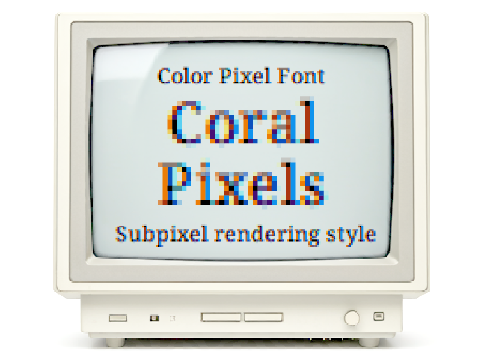
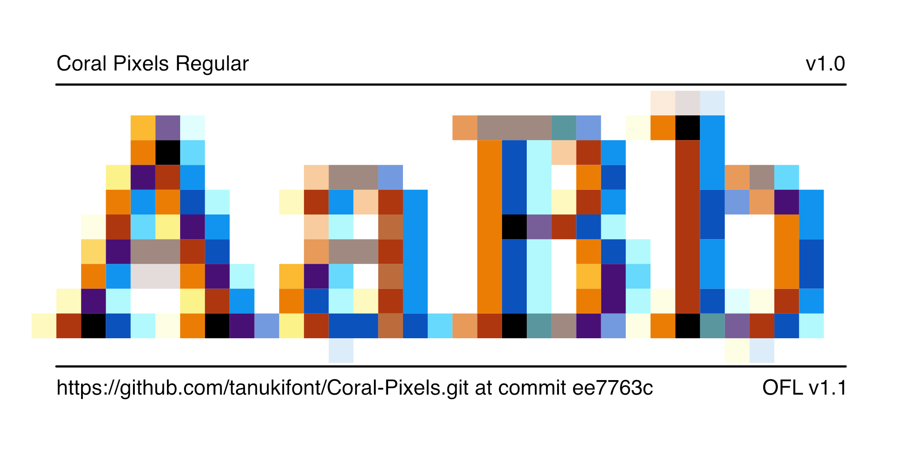
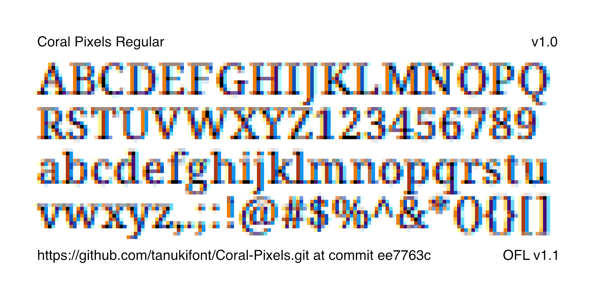
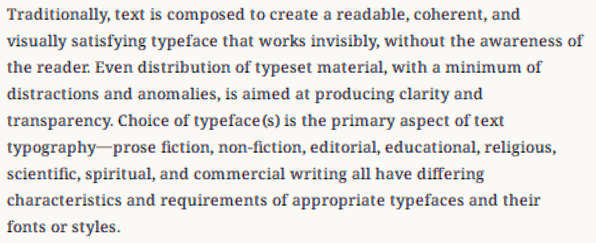
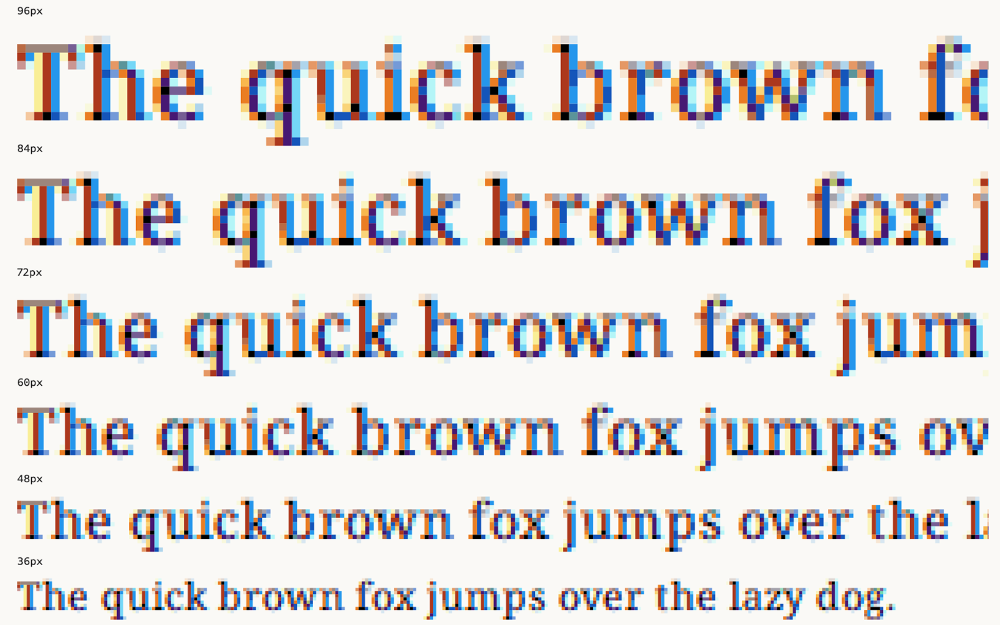

Coral Pixels is a color font inspired by subpixel rendering techniques.
It enhances the retro pixel font style commonly seen in games and digital art by adding color, creating a more vivid digital aesthetic.
This font uses the COLRv0 and CPAL tables. Please visit
the gf-guide color page
to learn more about Color Fonts technology.
To contribute, see github.com/tanukifont/Coral-Pixels.

Coral Pixels is a color font inspired by subpixel rendering techniques. It elevates the retro pixel font style commonly seen in games and digital art by infusing it with color, creating a more vibrant and dynamic digital aesthetic. Beyond being merely a font, it offers a new dimension for visual expression.
- Subpixel Rendering Expression: By applying display technology to font design, Coral Pixels creates a depth and dimensionality not typically found in traditional fonts. This innovative approach could inspire new ideas for retro game pixel art.
- Rich Color Expression: The font's glyphs, when viewed from a distance, appear as blurred black text. However, upon closer inspection, they reveal a random arrangement of colorful dots, offering a unique and visually engaging experience.
- Transparency Implementation: Coral Pixels incorporates transparency into its color elements to minimize the occurrence of unsightly fringes. While this design choice enhances the font's appearance, it can result in a loss of color vibrancy when used against dark backgrounds. As a temporary workaround, we recommend using color inversion or other adjustments within your application.



